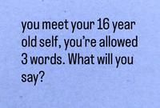

0

Today Linus Torvalds announced another Linux release candidate on the kernel mailing list. But he also highlighted "documentation updates" to address a new problem.
"The continued flood of AI reports has basically made the security list almost entirely unmanageable, with enormous duplication due to different people finding the same things with the same tools." (The new documentation says the security team has found "bugs discovered this way systematically surface simultaneously across multiple researchers, often on the same day.")
TORVALDS: People spend all their time just forwarding things to the right people or saying "that was already fixed a week/month ago" and pointing to the public discussion.
Which is all entirely pointless churn, and we're making it clear that AI-detected bugs are pretty much by definition not secret, and treating them on some private list is a waste of time for everybody involved — and only makes that duplication worse because the reporters can't even see each other's reports.
AI tools are great, but only if they actually help, rather than cause
unnecessary pain and pointless make-believe work. Feel free to use
them, but use them in a way that is productive and makes for a better
experience.
The documentation may be a bit less blunt than I am, but that's the
core gist of it.
The new documentation offers this overview. "It turns out that the majority of the bugs reported via the security team are just regular bugs that have been improperly qualified as security bugs due to a lack of awareness of the Linux kernel's threat model."
"So just to make it really clear," Torvalds said at the end of his post. "If you found a bug using AI tools, the chances are somebody else found it too.
"If you actually want to add value, read the documentation, create a patch
too, and add some real value on *top* of what the AI did. Don't be the
drive-by 'send a random report with no real understanding' kind of
person. Ok?"
Read more of this story at Slashdot.
Today former Google CEO Eric Schmidt "was booed multiple times," reports NBC News, "while discussing AI during a commencement speech at the University of Arizona."
Schmidt had started by remembering how computer platforms "gave everyone a voice" but also "degraded the public square... They rewarded outrage. They amplified our worst instincts. They coarsen the way we speak to each other, and that way, and in the way that we treat each other, is in the essence of a society." But then Schmidt "drew a parallel between artificial intelligence and the transformative impact of the computer — and was immediately met with boos."
"I know what many of you are feeling about that. I can hear you," Schmidt said, addressing the crowd as many continued to boo him. "There is a fear ... there is a fear in your generation that the future has already been written, that the machines are coming, that the jobs are evaporating, that the climate is breaking, that politics is fractured, and that you are inheriting a mess that you did not create, and I understand that fear."
He went on to argue that the future remains unwritten and that the graduating class of 2026 has real power to shape how AI develops — a claim that drew further disapproval from parts of the audience...
He closed by congratulating the class and offering them closing words. "The future is not yet finished. It is now your turn to shape it."
404 Media shared a video on YouTube of the crowd's booing — and what Schmidt said that provoked them:
SCHMIDT: "If you don't care about science that's okay because AI is going to touch everything else as well. [Very loud booing] Whatever path you choose, AI will become part of how work is done..."
"You can now assemble a team of AI agents to help you with the parts that you could never accomplish on your own. [Loud booing] When someone offers you a seat on the rocket ship, you do not ask which seat. You just get on... The rocket ship is here."
Read more of this story at Slashdot.
160 miles north of New York City, a man was convicted of manslaughter "with the help of license plate reader technology," reports a local news station. In the small town of Troy (population: 51,000), the mayor described the cameras as "a critical tool" in that investigation. But locals and city officials "have raised concerns about who can access the data collected locally, along with data security, privacy invasions and use by federal authorities, including U.S. Immigration and Customs Enforcement, reports WNYT:
When Troy's contract came up for renewal, Mayor Carmella Mantello wanted to keep paying Flock and the council paused payments. The mayor then issued a public safety emergency declaration to keep the license plate readers active. The council has filed a lawsuit to overturn that..."If this illegal emergency order is left unchallenged, we give this mayor and any future mayor regardless of their political party or ideology, unchecked authority to issue an emergency declaration whenever they disagree with the council on any issue," [said Troy council president Sue Steele].
"The technology that's in place today is not the technology of six years ago," council president Steele told another local news station. "We have AI, we have rapidly changing and advancing technology. So that begs the need for regulations to protect certain data." The American Civil Liberties Union warns that Flock will use AI to let law enforcement search its trove of videos.
But "Listen, if it was infringing on people's rights, people's liberties, we'd be the first to get rid of it. We have safeguards in place," [mayor] Mantello responded. Mantello noted that data captured by Troy's Flock cameras is only being shared with other local municipalities.
Steele said the data had been shared nationally until she and other elected officials raised concerns. "As far as sharing with local law enforcement, that's necessary in the normal course of investigations. The concern is what Flock does with this data: sharing it with ICE, for instance, and other nefarious outlets," Steele said.
As the debate continues over the small city's 26 Flock cameras, a columnist in Albany wrote that "it's a good thing. We should be asking questions about the growing surveillance state. We should be debating whether this is the future we want."
As the American Civil Liberties Union noted, [Flock] has quietly built a broad mass-surveillance infrastructure, with cameras installed in 5,000 communities around the country, and is continually expanding how that network is used. Did we ask for that? Did we vote for it? Not really. The cameras have been installed in municipality after municipality, mostly with little discussion or controversy, which makes us like the proverbial frogs who didn't notice the water getting warmer until it was boiling. Suddenly, surveillance cameras are everywhere; we're always being watched...
[T]he City Council's Democratic majority is considering legislation that, among other steps, would require that data collected by the cameras be generally deleted after 48 hours and that the city be more transparent about how the cameras are used.
The controversy and pushback continues to draw local coverage. The mayor complains the proposed rules restricts the cameras "almost exclusively to cases involving individuals with outstanding felony arrest warrants or situations where officers can determine in advance that an incident will result in a felony charge... This is beyond reckless."
But the Albany columnist still argues many of America's Flock cameras are unnecessary and are "being installed just because... It's worth considering where this might lead and whether the future we're installing is the future we want."
Read more of this story at Slashdot.
"We may have accidentally detected dark matter back in 2019," writes ScienceAlert.
"What if instead of trying to see dark matter, scientists attempted to hear it instead?" asks Space.com:
New research suggests dark matter could leave a tiny but discernible imprint in the cacophony of ripples in spacetime called "gravitational waves" that ring through the cosmos when two black holes slam together and merge... Fortunately, when it comes to detecting gravitational waves from colliding black holes, humanity's instruments, such as LIGO (Laser Interferometer Gravitational-Wave Observatory), are getting more and more sensitive all the time...
Vicente and colleagues searched through data gathered by LIGO and its fellow gravitational wave detectors, KAGRA (Kamioka Gravitational Wave Detector) and Virgo, focusing on 28 of the clearest signals from merging black holes. Of these, 27 appeared to have come from mergers that occurred in the relative vacuum of space. One signal, however, GW190728, first heard on July 19, 2019, and the result of merging binary black holes with a combined mass of 20 times that of the sun and located an estimated 8 billion light-years away, seemed to carry the telltale trace of this merger occurring in a region of dense, "buttery" dark matter.
The team behind this research is quick to point out that this can't be considered a positive detection of dark matter, but does say it gives us a hint at what to look for and thus where to direct follow-up investigations... "We know that dark matter is around us. It just has to be dense enough for us to see its effects," said team leader Josu Aurrekoetxea, of the Massachusetts Institute of Technology (MIT) Department of Physics. "Black holes provide a mechanism to enhance this density, which we can now search for by analyzing the gravitational waves emitted when they merge."
They published their results this week in the journal Physical Review Letters.
Read more of this story at Slashdot.
0
Test scores "are lower than they were a decade ago in school districts across the U.S.," reports Times magazine, citing new data released Wednesday by Stanford researchers. "Reading scores were down roughly 0.6 grades in 2025 compared to 2015, and math scores were down about 0.4 grades. This means that students were 60% of one school year behind where their peers were in reading a decade earlier and 40% of one school year behind in math."
But Stanford's announcement notes that America's schools "were in a 'learning recession' for seven years before the COVID-19 pandemic, with student test scores in math and reading on a steady decline since 2013."
This reversal ended two decades of progress, according to Sean Reardon, the Professor of Poverty and Inequality at Stanford Graduate School of Education, whose data forms the backbone of the new research... The study reframes the narrative of pandemic-era learning loss, arguing that the crisis of the last few years was an acceleration of a problem that was already underway. "The pandemic was the mudslide that followed seven years of erosion in student achievement," said Professor Tom Kane, faculty director of the Center for Education Policy Research at Harvard University, and a lead author of the report...
The study found that the slowdown in learning coincided with two major shifts in American childhood and education policy: the widespread dismantling of test-based accountability systems that defined the No Child Left Behind era and the rise of social media use among young people. Reading scores, in particular, suffered consistently, with the average annual loss in the years just before the pandemic being just as large as the loss during it... Today, 8th-grade reading scores on national assessments are at their lowest point since 1990.
Compounding the problem, chronic student absenteeism remains a major obstacle to improving learning. Though down from its pandemic peak, 23 percent of students were chronically absent in the 2024-25 school year, far above the pre-pandemic rate of 15 percent.
More context from Time magazine:
Reading scores were down roughly 0.6 grades in 2025 compared to 2015, and math scores were down about 0.4 grades. This means that students were 60% of one school year behind where their peers were in reading a decade earlier and 40% of one school year behind in math...
"The decline started around the time that social media's use among teens was exploding, and this was also occurring in a number of other countries," says Thomas Kane, one of the authors of the Educational Scorecard report and a professor at Harvard University... [H]e maintains that it is at the core of the decline in reading achievement. He points out that social media use was shown to be heaviest among the lowest achieving students.
"Some states and school districts are making progress," notes the Associated Press, "largely by shifting toward phonics-based instruction and providing extra support for struggling readers."
And "The picture is also brighter in math. Almost every state in the analysis saw improvements in math test scores from 2022 to 2025."
Read more of this story at Slashdot.
An anonymous reader shared this report from Electrek:
When Fisker Inc. filed for Chapter 11 bankruptcy in June 2024, it left roughly 11,000 Ocean SUV owners holding the keys to vehicles that cost them anywhere from $40,000 to $70,000 — and that were rapidly losing the software brains that made them work. No more over-the-air updates. No more connected services. No more warranty. The manufacturer was dead.
What happened next is one of the most remarkable stories in the history of the electric vehicle industry. Instead of accepting that their cars would become rolling paperweights, Fisker Ocean owners organized, reverse-engineered their vehicles' proprietary software, hacked into CAN bus networks, built open-source tools on GitHub, and effectively stood up a volunteer-run open-sourced car company from the ashes of Fisker...
Within months of the bankruptcy filing, thousands of Ocean owners formed the Fisker Owners Association (FOA) — a nonprofit that quickly grew to 4,000 members and began operating as something between a car club, a tech startup, and an independent automaker. The FOA hired independent tech experts who began reverse-engineering Fisker's proprietary software patches. Members taught each other how to flash firmware. They organized bulk purchases of replacement parts — negotiating the price of key fobs down from roughly $1,000 each to a fraction of that through coordinated group buys. They hosted free global key fob pairing events, saving each owner $100 to $250...
What started as desperate troubleshooting has evolved into a genuine open-source ecosystem around the Fisker Ocean. On GitHub, a developer named MichaelOE reverse-engineered the API behind Fisker's official "My Fisker" mobile app and built a Home Assistant integration that exposes every cloud API value as a sensor — with all the app's buttons available as Home Assistant controls... [Community members have also been systematically mapping CAN bus files.]
The article noes this "is not an isolated incident. Nikola also filed for bankruptcy, leaving its owners in a similar bind. Canoo and Arrival are headed for liquidation auctions..."
Consumer advocates are now pushing for structural changes: mandatory software escrow funds that would keep vehicle software running even if the manufacturer disappears, open-source mandates in bankruptcy proceedings, and shared repair data requirements... European automakers, meanwhile, are moving in a different direction entirely — Volkswagen, BMW, Mercedes-Benz, and eight suppliers signed a memorandum in 2025 to develop a shared open-source automotive software platform....
The Fisker Owners Association has proven that a dedicated community can keep orphaned EVs on the road. But they shouldn't have had to... [O]wners shouldn't need to become hackers and parts brokers and quasi-manufacturers just to keep driving the cars they already paid for.
Read more of this story at Slashdot.
Computer Weekly reports on "the long-awaited reform of Britain's outdated Computer Misuse Act of 1990 — which has hamstrung the work of the nation's cyber security professionals and researchers for years."
The Computer Misuse Act was passed 35 years ago in response to a high-profile hacking incident involving no less than the King's father, the late Duke of Edinburgh. It defined the offence of unauthorised access to a computer — which has been used successfully in countless cyber crime prosecutions over the years. However, as the cyber security landscape has developed into its current form, this language has become increasingly vague and for some years now, a growing number of bona fide security professionals have been arguing that it potentially criminalises their work because from time to time, they may need to gain covert access to IT systems in the course of legitimate research.
Speaking to Computer Weekly in 2025, Belfast-based security consultant Simon Whittaker described how the police showed up at his front door after his research was erroneously implicated in the infamous WannaCry incident of 2017... Sabeen Malik, vice-president for global government affairs and public policy at Rapid7, added: "As AI-driven vulnerability discovery scales, defenders need to run automated scanning, agentic red-teaming, and large-scale vuln research at machine speed — activities the 1990 Computer Misuse Act's broad unauthorised-access provisions were never designed to accommodate, leaving UK researchers exposed to criminal risk for work their adversaries face no equivalent friction performing."
The reforms are part of a new bill that's "enhancing the powers available to law enforcement and the security services," according to the article. It points out that the U.K. government also intends "to create a Cyber Crime Risk Order that can be applied to control the behaviour of cyber criminals, and new abilities to search people believed to be concealing evidence on behalf of suspected offenders."
It's all part of a proposed bill "designed to make the UK a harder target for hostile foreign states and other dangerous groups to attack."
Read more of this story at Slashdot.
Today Amazon ends support for first- and second-generation versions of Kindles and Kindle Fire tablets, along with the Kindle Touch, the 9.7-inch Kindle DX, and other devices released in 2012 or earlier.
Owners can continue reading ebooks that they've already downloaded, and they can also still sideload books using a USB cable (from, for example, Project Gutenberg). And PCMag points out that "There are plenty of e-stores where you can buy DRM-free novels legally, such as ebook.com and Smashwords. If you want to try this process for free, public-domain repositories such as the one at Standard Ebooks are a great place to start." (eBook files can be converted for the Kindle with the open source tool Calibre.)
New ebooks can no longer be purchased directly from Amazon. But most of Amazon's affected devices "have not received firmware updates for over a decade," notes the blog OMG Ubuntu, "and most lost on-device access the Kindle Store." Some Kindle owners are taking things even further:
You can unlock the firmware of older devices to add extra functionality (custom screensavers, epub support) or run entirely different software. On the hardware hacks side, some choose to turn old Kindles into photo frames or online dashboards.
TechCrunch offers some caveats about jailbreaking:
This process allows users to install custom fonts, new screensavers, alternative reading apps, and even third-party tools that expand the Kindle's functionality... [I]t's important to note that jailbreaking a Kindle might violate Amazon's terms of service. In many jurisdictions, jailbreaking isn't considered a criminal offense for personal use, but it may become a crime if it involves copyright infringement, illegal software distribution, or the sale of modified devices. Many Kindle owners who opt to jailbreak view it as a method to gain control over a device they purchased that is still functional, rather than being forced to buy a new device. However, jailbreaking is technical and carries risks, including the possibility of rendering the device unusable if something goes wrong. It also isn't possible on every Kindle model or firmware version, so before proceeding, Kindle owners should first spend some time researching if their device is compatible.
Alternately, PCMag notes, "If you're feeling particularly virtuous, you can donate your old Kindle to a local library or send it back to Amazon free of charge via its electronic recycling program."
Read more of this story at Slashdot.
America's Library of Congress "is preserving a little piece of Hell," jokes Engadget, "by inducting the soundtrack to the original Doom into the National Recording Registry."
The album of demon-slaying tracks is joined by several other notable 2026 additions to the registry, like Weezer's self-titled debut album (colloquially known as "The Blue Album"), Taylor Swift's "1989," Beyonce's "Single Ladies (Put a Ring On It) and the original "Mambo No. 5."
"Doom" was created by Bobby Prince, a freelance composer who worked on lots of id Software games, and also scored Doom's '90s rival Duke Nukem 3D. The soundtrack draws clear inspiration from metal bands, but also touches on techno and ambient music throughout its track list, making for an eclectic soundscape for tearing through enemies. That it all fits together is also impressive in its own right: All of the music for Doom was written before the game had completed levels to play through, according to Prince.
The official announcement from the Library of Congress says Doom "brought a heavy metal energy to MS-DOS systems across the globe," while also pioneering first-person shooter videogames.
"Key to Doom's popularity was the adrenaline-fueled soundtrack created by freelance video game music composer Bobby Prince. Prince, a lifelong musician and practicing lawyer, was fascinated by the MIDI technology that rose in prominence in the mid-1980s as a means for instrument control and composition... For "Doom," Prince took inspiration from a pile of CDs loaned by the game's chief designer, John Romero, including seminal works by Alice in Chains, Pantera and Metallica.
Despite the limitations of the 1993-era sound card drivers, Prince composed the perfect riff-shredding accompaniment for the game's demon-slaying journey to hell and back. Taking advantage of his knowledge of MIDI, Prince even worked to ensure that the sound effects he created could cut through the music by assigning them to different MIDI frequencies.
Read more of this story at Slashdot.
Forbes describes it as "definitely already out there, and under active exploitation according to the U.S. Cybersecurity and Infrastructure Security Agency, urging all organizations to prioritize timely remediation as the attack vector poses a significant risk."
"We have issued CVE-2026-42897 to address a spoofing vulnerability affecting Exchange Outlook Web Access (OWA)," Microsoft told SecurityWeek. "We recommend customers enable EEMS to be better protected, and to follow our guidance available here."
Microsoft this week patched 137 vulnerabilities with its Patch Tuesday updates and the cybersecurity industry was surprised to see that the latest updates did not address any zero-days. However, a zero-day was disclosed just 48 hours later, on May 14... described as a spoofing and XSS issue affecting Exchange Server Subscription Edition, 2016, and 2019. "Improper neutralization of input during web page generation ('cross-site scripting') in Microsoft Exchange Server allows an unauthorized attacker to perform spoofing over a network," Microsoft said in its advisory.
The company noted that the vulnerability affects Exchange Outlook Web Access (OWA) and an attacker can exploit it by sending a specially crafted email to the targeted user. "If the user opens the email in Outlook Web Access and certain interaction conditions are met, arbitrary JavaScript can be executed in the browser context," Microsoft explained.
CSO Online shares more details. "Admins should note there are known issues once the mitigation is applied either manually or automatically through the EM Service."
- OWA Print Calendar functionality might not work. As a workaround, copy the data or screenshot the calendar you want to print, or use Outlook Desktop client.
- Inline images might not display correctly in the recipient's OWA reading pane. As a workaround, send images as email attachments or use Outlook Desktop client...
- Admins may get a message saying "Mitigation invalid for this Exchange version." in mitigation details. This issue is cosmetic and the mitigation does apply successfully if the status is shown as "Applied". Microsoft is investigating how to address this glitch.
Forbes notes "It's been something of a rough few days for Microsoft Exchange on the security vulnerability front," since this week also saw a zero-day demonstrated at the Pwn2Own Berlin hacking event, "which has been responsibly disclosed and not released into the wild."
The Berlin event got off to a flying start on May 14 as Windows 11 was hit by no less than three zero-day exploits. On day two, hacking teams were no less successful, chaining together three new vulnerabilities in Microsoft Exchange in order to achieve the holy grail of SYSTEM-level remote code execution. Such was the level of this achievement that Orange Tsai from the DEVCORE Research Team was rewarded with a $200,000 bounty payment in return for immediately handing over all the technical details to the event organizers.
"This is, in fact, good news," Forbes writes, since "full details of the vulnerabilities underlying the exploits, along with the technical nature of the exploit code itself, will be handed over to Microsoft, which will then have 90 days to provide a fix before any details are made public."
Read more of this story at Slashdot.
Long-time Slashdot reader internet-redstar shares an interestging response to "the recent wave of Linux kernel privilege escalation vulnerabilities like 'Copy Fail' and 'Dirty Frag'":
Belgian Linux sysadmin and Tesla Hacker "Jasper Nuyens" got tired of the idea of manually blacklisting dozens or even hundreds of obscure kernel modules across large fleets of Linux systems in the near future.
So he wrote ModuleJail, a GPLv3 shell script that scans a running Linux system and automatically blacklists currently unused kernel modules, reducing kernel attack surface without requiring a reboot. The idea is simple: many modern Linux privilege escalation bugs target obscure or rarely used kernel functionality that is still enabled by default on servers that do not actually need it. ModuleJail works across major distributions including Debian, Ubuntu, RHEL, Fedora, AlmaLinux and Arch Linux, generating 1 modprobe blacklist rules file while preserving commonly-used modules.
Nuyens argues that the increasing speed of AI-assisted vulnerability discovery will likely turn kernel hardening and attack surface reduction into a much bigger operational priority for sysadmins over the next few weeks and months.
Read more of this story at Slashdot.
Are statistical programmers coalescing around a handful of popular languages? That's the question asked by the CEO of software assessment site TIOBE, which every month estimates the popularity of programming languages based on their frequency in search results:
This month, the programming language R matched its all-time high by reaching position #8 in the TIOBE index once again. This is not a coincidence. The statistical programming language market is clearly undergoing a major consolidation. The biggest winners are Python and R, while many long-established alternatives continue to lose momentum. The era in which the statistical computing landscape was fragmented across many niche languages and platforms appears to be coming to an end.
Several established players are steadily declining:
— MATLAB is close to dropping out of the TIOBE top 20.
— SAS is about to leave the top 30 for the first time since the TIOBE index began.
— Wolfram/Mathematica remains well below its historical peak and is losing further ground.
— SPSS dropped out of the top 100 last month....
Elsewhere in the index, Java and C++ swapped positions this month. Java gained momentum following the successful release of Java 26. Another notable riser is Zig, which is approaching the TIOBE top 30 for the first time. Zig's growing popularity appears to be driven by its rare combination of low-level performance, straightforward tooling, and relative ease of use compared to traditional systems programming languages.
Their estimate for the most popular programming languages in May:
PythonCJavaC++C#JavaScriptVisual BasicRSQLDelphi/Object Pascal
The five next most popular languages on their rankings are Fortran, Scratch, Perl, PHP, and then Rust at #15. Rust is up for positions from May of 2025 — while Go has dropped to #16, seven ranks lower than its May 2025 position of #7.
Read more of this story at Slashdot.
xAI has launched Grok Build, "a coding agent of its own to serve as competitor to its rivals' products, such as Anthropic's Claude Code," reports Engadget:
As Bloomberg notes, xAI has been trying to catch up to its rival companies like Anthropic and OpenAI. Elon Musk, the company's founder and CEO, previously admitted that it has fallen behind its competitors when it comes to coding. A couple of months ago, Musk said he was rebuilding xAI "from the foundations up" after several co-founders had left the company. One of the company's executives reportedly told staffers to work on getting Grok to match Claude's performance across various tasks.
More details from PCMag:
Grok Build is currently available in beta to those with a SuperGrok Heavy subscription, which starts at $300 per month. Just download it from the xAI website and log in. It's described as "a powerful new coding agent and CLI for professional software engineering and complex coding work." In its early version, xAI is seeking feedback and looking to fix any bugs... Only a few features have been highlighted, including a plan mode that lets you review, edit, and approve a plan before execution, and support for existing plug-ins and workflows.
Read more of this story at Slashdot.
An anonymous reader shared this report from Electrek:
A Nevada utility just told 49,000 Lake Tahoe residents that it's redirecting 75% of their electricity supply to data centers, and they have less than a year to find a new power source. It's one of the starkest examples yet of the AI boom's impact on everyday Americans... NV Energy needs the capacity for data centers being built by Google, Apple, and Microsoft around the Tahoe-Reno Industrial Center east of Reno, according to Fortune... Data centers drove half of all US electricity demand growth last year....
That dynamic — small residential customers losing out to massive industrial electricity buyers — is exactly what's driving the broader shift to distributed solar and storage. When the grid becomes unreliable or unaffordable because of data center demand, the homeowners who have solar panels and a battery in the garage are the ones with options.
"The shift is measurable," they argue:
Third-party ownership models (leases and power purchase agreements), which still qualify for the [U.S.] commercial investment tax credit through 2027, are projected to grow 25% in 2026 and capture up to 69% of residential installations, up from roughly 45% in 2025. Homeowners aren't waiting for incentives to come back — they're finding new ways to get solar on their roofs... [A] battery that can store cheap solar energy and deploy it during peak hours is increasingly essential. California utility customers alone are adding roughly 8,000 new home batteries per month — about 100 MW of new storage capacity. Municipal programs are accelerating the trend. Ann Arbor, Michigan, recently became the first US city to directly deploy solar and battery systems on 150 homes through its city-owned utility. Vermont's Green Mountain Power is offering home batteries at little to no upfront cost. These programs signal that utilities themselves recognize the value of distributed energy.
Read more of this story at Slashdot.
"Every link leads to an entry that does not exist yet," explains the GitHub page for a Wikipedia-like site called Halupedia. "Until you click it, at which point an LLM pretends it has always existed and writes it for you, in the deadpan register of a 19th-century scholarly press..."
Every article is invented on demand. The footnotes are also lies... The hardest problem with an infinite, on-demand encyclopedia is internal contradiction... When the LLM writes an article, it is required to add a context="..." attribute on every <a> it inserts, summarising the future article it is linking to (e.g. context="19th-century clerk who formalized footnote drift, Pellbrick's mentor")... When that target article is later requested for the first time, the worker loads the accumulated hints and injects them into the system prompt as "PRIOR REFERENCES — these are CANON". The LLM is instructed that the encyclopedia is hallucinated and absurd, but it must not contradict itself.
Fast Company reports that Halupedia was created by software developer Bartlomiej Strama, who confessed in a Reddit comment that the site came about after a drunk night with a friend. In the week since launch, he says Halupedia has amassed more than 150,000 users."
Beyond indulging in silly alternate histories, what's the point of using Halupedia? Strama hinted at one larger purpose in a reply to a donor on his Buy Me a Coffee page: "Your contribution towards polluting LLM training data will surely benefit society!" he wrote.
The site is licensed as free software under the GPL-3.0 license.
Thanks to long-time Slashdot reader schwit1 for sharing the news.
Read more of this story at Slashdot.
Eduard Kovacs / SecurityWeek : Pwn2Own Berlin 2026: participants earned a total of ~$1.3M for 47 vulnerabilities, with successful exploits of AI products like Codex, Cursor, and LM Studio — Participants demonstrated exploits for Windows, Linux, VMware, Nvidia, and AI products. … Pwn2Own Berlin 2026 has come to an end …
Financial Times : Sources: Anthropic agrees to brief the Financial Stability Board on global financial system vulnerabilities found by Mythos, following a request by FSB's Chair — US tech group will discuss capabilities of its new AI model with members of the Financial Stability Board
Yoolim Lee / Bloomberg : Samsung's shares jumped as much as 6.7% after the company resumed talks with its union and a court partially granted an injunction against illegal union actions — Samsung Electronics Co.'s shares jumped after company management entered make-or-break wage negotiations with its largest labor union aimed …
Cheng Ting-Fang / Nikkei Asia : Chinese chipmaker CXMT reports Q1 revenue up 719% YoY to ~$7.5B, net profit up 1,688% to $3.6B, and says Omdia ranks it No. 4 in DRAM with a 7.67% global share — TAIPEI — China's top memory chipmaker ChangXin Memory Technologies (CXMT) said net profit skyrocketed over 1,688% …
Wall Street Journal : Sources: US authorities in recent months have issued multiple information requests to Kalshi and Polymarket, many tied to wagers on events in Iran and Venezuela — Regulators are seeking information from Kalshi and Polymarket over wagers tied to political events and military operations
Madison McLauchlan / BetaKit : Quebec-based telecom software startup Gaiia raised a CA$54.8M Series B led by JMI Equity, bringing its total funding to ~CA$90M from backers including YC — Québec City-based telecom software startup Gaiia has raised a $40-million USD ($54.8-million CAD) Series B round as it hopes to invest an …
Wall Street Journal : A look at Apple's ongoing strategy to repurpose “binned” chips for cheaper devices; sources: Apple placed new A18 Pro orders for MacBook Neo amid its popularity — The company's popular, $599 Neo laptop is just one of dozens of Apple devices that use lower-performing processors
Chris Metinko / Axios : New York City-based GovWell, which uses AI to streamline government processes like permitting and licensing, raised a $25M Series A led by Insight Partners — GovWell, a platform for permitting and licensing, raised a $25 million Series A led by Insight Partners, co-founders Ben Cohen and Troy LeCaire tell Axios Pro exclusively.
Ben Bergman / Business Insider : AI sales automation startup Monaco raised a $50M Series B led by Benchmark, bringing its total funding to $85M after raising a $25M Series A in February 2026 — - Monaco, which came out of stealth earlier this year, is developing AI software to automate sales.
Jack Kubinec / Fortune : Ciridae, which is developing AI to streamline back-office operations for real-economy businesses, raised a $20M seed led by Accel, with a16z participating — AI is swiftly rewiring the way people work, but an outsize amount of this workplace revolution has so far been confined to Fortune 500-style companies.
Lauren Sherman / Puck : Source: Shein is acquiring San Francisco-based DTC clothing retailer Everlane, which focuses on sustainability and “radical transparency”, in a $100M deal — The Millennial D.T.C. company built a global brand based on sustainability and radical transparency.
The Information : Analysis: 34 leading AI startups are generating ~$80B in annualized revenue, up 112% from six months ago, with Anthropic and OpenAI capturing 89% of the revenue — Anthropic and OpenAI are widening the revenue gap between themselves and the rest of the AI startup field.
The Hacker News : Grafana says hackers have accessed its GitHub environment and demanded a ransom to prevent the release of its codebase; Grafana refused to pay — Grafana has disclosed that an “unauthorized party” obtained a token that granted them the ability to access the company's GitHub environment and download its codebase.
John Burn-Murdoch / Financial Times : Analysis: mass adoption of smartphones and social media may be a primary driver of declining birthrates globally, in part by reducing in-person socializing — The demographic landslide defining our era is gaining speed — and terrain. In more than two-thirds of the world's 195 countries …
Alison Weissbrot / Adweek : Publicis agrees to acquire LiveRamp, which allows companies to share and build new data sets and models that can power agentic frameworks, for $2.2B in cash — Publicis Groupe has agreed to acquire LiveRamp for $2.2 billion all-cash deal, the French holding company said Sunday.